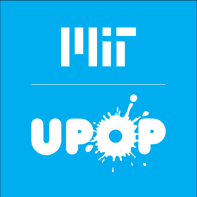
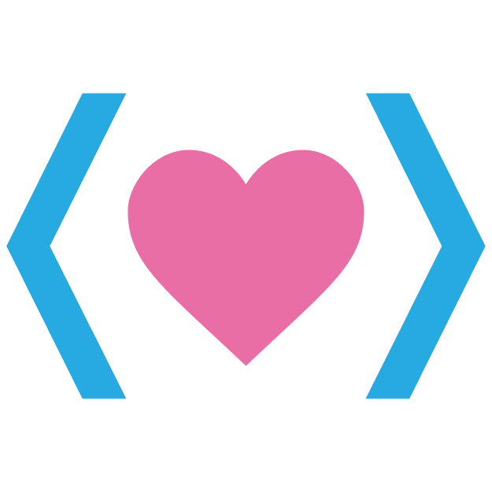
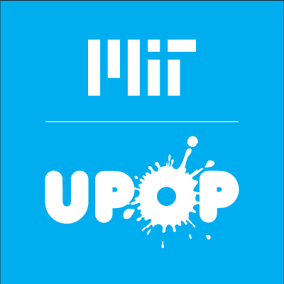
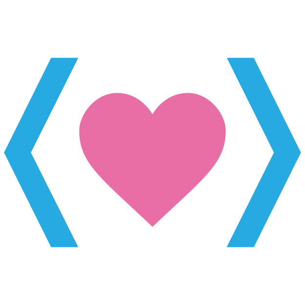

Hello, I'm Janice.
I like mac and cheese.
I like mac and cheese.


 




Outside of classes, you can probably find me doing one of the following...
I love making things, especially as gifts to other people! I enjoy making things from cards to plushies to wall decorations. I want to learn how to crochet sometime. I enjoy giving people things I've made because it's like they have a tiny piece of me with them! I also find hand-made things really cute and meaningful.
I like making music! I learned piano when I was young and have played the clarinet since 4th grade. Music helps me destress, and I've enjoyed playing in bands as well as with my friends. My favorite class in high school was probably band. I loved the sound when everyone plays together! I also tried out jazz (clarinet + alto sax) for 2 years!
I like dancing! A super long time ago, I did traditional Chinese folk dance and some ballet. I then did not dance for a long time. My freshman year of MIT, I joined MIT's Asian Dance Team, and since then, I have been dancing every semester! I enjoy doing both traditional and KPOP pieces as well as co-choreographing!
I love desserts! I enjoy trying out different foods from different places when I travel or visit somewhere new. I especially like cute and matcha flavored desserts! What's better to go with travelling than yummy food! Some of my favorite drinks / desserts include milk and thai tea, lavender / matcha / ube ice cream, and taiyaki!